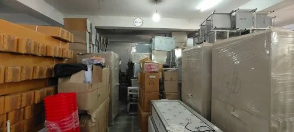
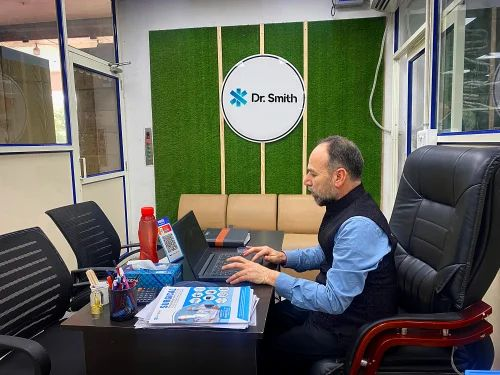

Dr. Smith
Smart Premium Products: premium quality, practical functionality and economical pricing. Dr. Smith manages its brand’s manufacturing, supply, installation and after-sales support, with an expanding in-house manufacturing range.
Meet the Dr. Smith product brand and Surgical Wholesale Mart, its procurement and project collaborator.
Smart Premium Products: premium quality, practical functionality and economical pricing. Dr. Smith manages its brand’s manufacturing, supply, installation and after-sales support, with an expanding in-house manufacturing range.
A separate company supporting wider procurement, experience centres and hospital project coordination. Its manufacturing and multi-brand sourcing connect the Dr. Smith portfolio with broader hospital requirements.
The supplying entity and the responsibilities for each product or service are confirmed in the quotation or contract.
The family journey began with surgical instruments and expanded across generations into hospital furniture and medical equipment.
Make premium healthcare products more accessible through practical functionality, thoughtful pricing and dependable customer support.
Build a trusted healthcare product brand shaped by family experience, continuous improvement and the evolving needs of hospitals.
Long-term direction and values.
Business operations and the healthcare product portfolio.
Strategy, execution and customer-focused growth.
Marketing, product communication and customer relationships.
The portfolio spans hospital furniture, medical equipment, instruments, medical consumables, hospital linen and MGPS & modular OT products.
Established in 2022, the original company profile describes Surgical Wholesale Mart as a manufacturer, wholesaler and trader serving healthcare facilities. Its published range includes hospital beds and furniture, ICU and monitoring equipment, anaesthesia and operating-theatre systems, surgical instruments, medical gas infrastructure, mobility products and hospital supplies.
The profile also describes procurement, manufacturing, warehousing, quality control, research and development, and coordinated fulfilment capabilities. Product specifications, documentation, delivery and service scope are confirmed for each quoted item.


Product selection considers healthcare needs, suitable materials, performance requirements and product support. The growing manufacturing range includes products made in India; confirm country of origin for each model.
Ask for applicable ISO, CE, FDA, GMP, CDSCO or MSME documentation for your selected product and legal supplying entity. Company registration and product conformity are distinct; coverage is confirmed per model or quotation.
Request relevant documentation →Figures as published on the Dr. Smith company website; these are company-reported portfolio figures, not the count of products listed on this storefront.
The company catalogue records equipment supplied for a 500-bed hospital, 125 ventilators installed for The Art of Living Organisation, and export supply for Zimbabwe’s Ministry of Health & Family Care. These references concern equipment supply and installation.
Product planning for hospitals from 25 to 500 beds is discussed project by project. Architecture, civil, MEP, modular OT and MGPS coordination can involve partner-supported services through Surgical Wholesale Mart.
Request relevant project references →Manufacturing, office and experience-centre contacts are published across India and Sharjah, UAE. Confirm the destination, opening status and the products available for demonstration before visiting.
Explore all locations →Get help with selection, configurations and bulk requirements.